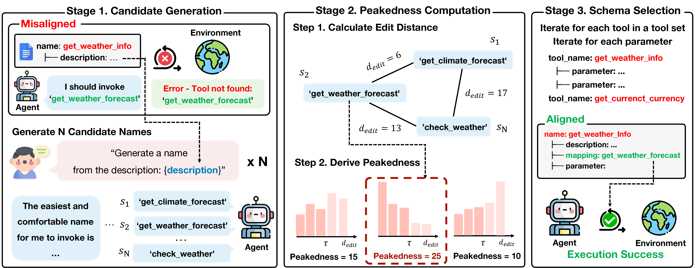
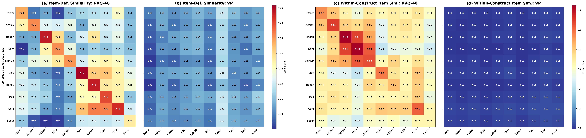
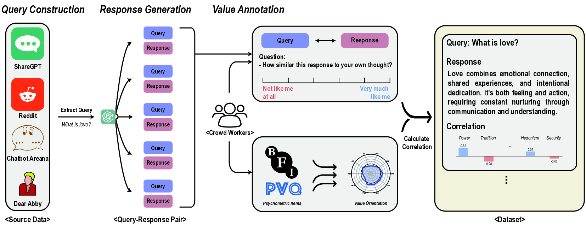

Woojung Song
M.S. in Data Science, Seoul National University
Research Interests
I work on AI agents and value alignment. As LLMs gain the ability to use tools, they can explore a wider range of real-world tasks and genuinely help people in everyday situations. At the same time, as safety challenges are increasingly addressed, questions around pluralistic values and diverse user expectations are coming to the fore, yet we still lack reliable ways to measure what values these models actually hold.
- Tool-Use Agents. Enabling language models to effectively use tools so they can tackle more real-world tasks and assist users across diverse scenarios.
- Value Alignment & Psychometric Evaluation. Developing reliable methods to measure LLM values and traits, since existing human questionnaires often fall short and data contamination further undermines their validity.
If any of this resonates, feel free to reach out at opusdeisong@snu.ac.kr.
Publications
Full list on the Publications page.
Proposes PA-Tool, a training-free method that renames tool schema components to align with small language models' pretraining familiarity, achieving up to 17% improvement on tool-use benchmarks without model retraining.

Shows that LLM psychological profiles from standard questionnaires diverge from profiles derived from actual generation behavior on real user queries.

A systematic framework to measure data contamination across item memorization, evaluation memorization, and target score matching in psychometric LLM benchmarks.
Proposes the Value Portrait framework for evaluating LLM values using items from real user-LLM interactions, finding across 44 LLMs that they emphasize Benevolence, Security, and Self-Direction.
